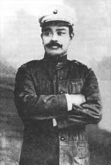
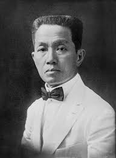
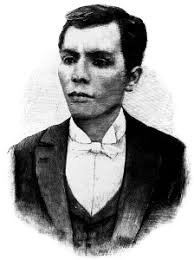

|
Lapu-Lapu |
1491-1542 |
Defeated the Spanish forces, who were lead under Ferdinand Magellan, in the Battle of Mactan, during 1521. |
|  |
Antonio Luna |
1866-1899 |
Founded the Philippine Military Academy in 1898. Participated in the Philippine-American War but died before its end. |
 |
Jose Rizal |
1861-1896 |
Wrote two of the most famous historical novels, Noli Me Tángere (1887) and El Filibusterismo (1891). |
|  |
Emilio Aguinaldo |
1869-1964 |
Became the first President of the Philippines, and declared the country independent on June 12, 1898. |
|  |
Andres Bonifacio |
1863-1897 |
Founder of the KKK (Kataastaasan Kagalang-galang na Katipunan ng mga Anak ng Bayan), which is the society that led the rebellion against Spain. |